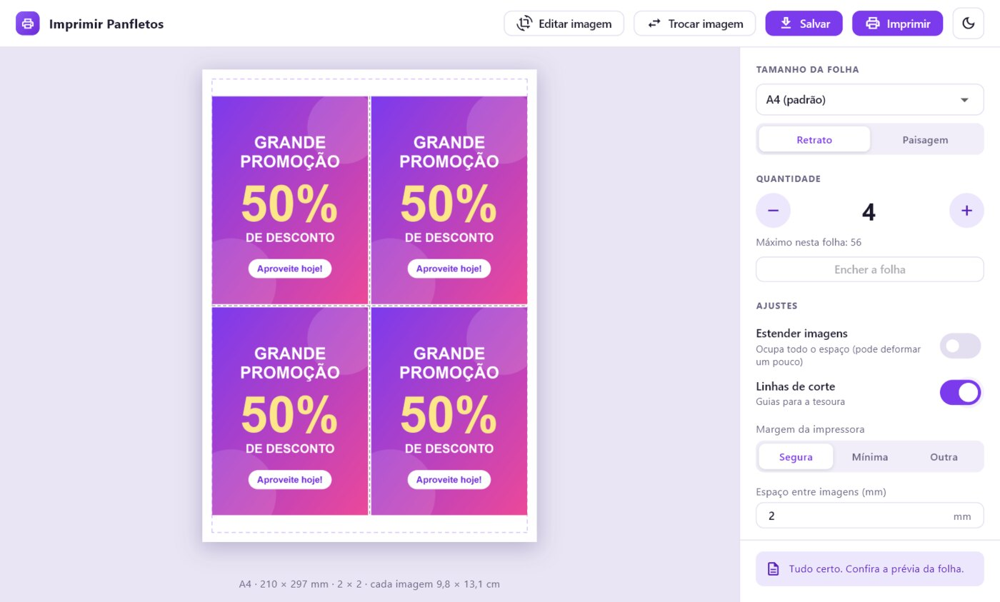
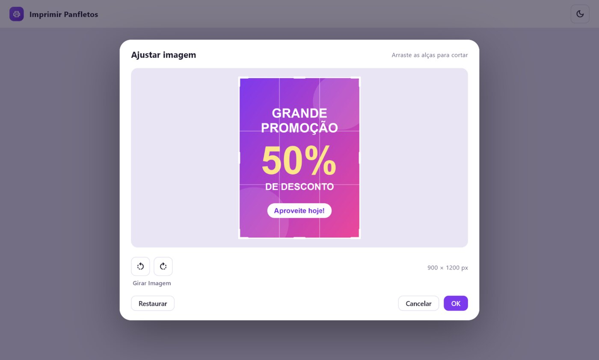
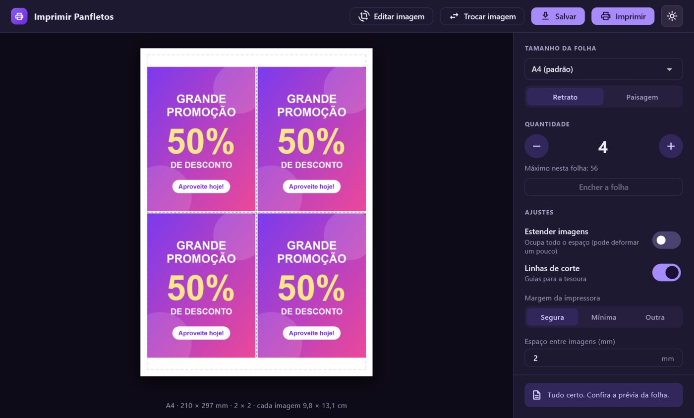

Várias cópias da sua imagem na mesma folha
Escolha a imagem, diga quantas cópias quer e o programa distribui tudo na folha, no tamanho certo, pronto para imprimir e recortar. Sem brigar com o Word.
⬇ Baixar grátis para WindowsWindows 10 ou 11 (64 bits) · sem precisar de administrador · atualiza sozinho

Feito para quem imprime panfleto, cartão e etiqueta
Gráficas rápidas, comércios, escolas, igrejas e eventos: qualquer um que precise de várias cópias pequenas numa mesma folha.
Distribui sozinho
Escolha a quantidade (de 1 a 100) e veja a folha na hora. O programa calcula a melhor distribuição e o máximo que cabe.
Qualquer imagem
JPG, PNG, WEBP, BMP, TIFF, GIF, AVIF e HEIC (as fotos do iPhone). Gire e corte só o detalhe que quiser.
Várias folhas
A4, A3, A5, Carta, Ofício ou tamanho personalizado, em pé ou deitada, com margens seguras para a impressora.
Aproveita o espaço
“Estender imagens” ocupa a folha inteira, deformando só um pouco, sem cortar nada. Ou defina o tamanho em centímetros.
Linhas de corte
Guias entre as imagens para a tesoura ou a guilhotina, quando você quiser.
Imprime ou salva
Imprime em tamanho real pela janela de impressão do Windows, ou salva em PDF e em Word (.docx).
Como usar
Quatro passos, sem configuração.
- Escolha a imagemArraste para a janela, clique em “Escolher imagem” ou cole com Ctrl+V.
- Gire e corteSe quiser só um detalhe, ajuste na hora e clique em OK.
- Diga quantas cópiasA folha se organiza sozinha e mostra como vai sair.
- Imprima ou salveDireto na impressora, ou em PDF ou Word.


Leve, simples e com modo escuro
Um programa pequeno, direto ao ponto, que abre rápido e lembra as suas escolhas de folha e margem. Aparece em modo claro ou escuro, como você preferir.
Suas imagens ficam no seu computador. O programa não envia nada para a internet. Leia a política de privacidade.
Perguntas frequentes
É gratuito?
Sim. O Imprimir Panfletos é de uso gratuito.
O Windows mostrou “O Windows protegeu o seu PC”. É seguro?
Esse aviso aparece para programas novos que ainda não têm uma assinatura digital paga. Clique em Mais informações e depois em Executar assim mesmo. O instalador vem direto deste endereço do GitHub, e o programa só verifica atualizações assinadas pelo desenvolvedor.
Funciona com a minha impressora?
Com qualquer impressora já instalada no Windows. O programa abre a janela de impressão do próprio Windows, onde você escolhe a impressora e o papel.
Precisa de internet?
Só para baixar e para verificar atualizações. Para montar e imprimir, não.
Quais tamanhos de imagem funcionam?
Imagens de até 200 MB. Fotos muito grandes (acima de 5000 pixels) são reduzidas sem perda visível para a impressão.
Como atualizo?
O programa avisa quando há versão nova e atualiza sozinho. Você também pode baixar o instalador de novo e instalar por cima.
Tem versão para celular?
Uma versão para Android está nos planos.
Pronto para imprimir?
Baixe, instale e monte o seu primeiro panfleto em menos de um minuto.
⬇ Baixar grátis para Windows